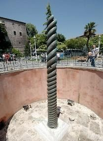

A Greek Victory or Persian Defeat?
Analysing the factors behind the outcome of the Persian Wars
Quick Brainstorm of Reasons for Victory
- Pausanias' skilful leadership at Plataea
- Themistocles' policy of developing Athenian naval strength
- Xerxes' over-confidence
- Greek unity
- Superior Greek armour and equipment
- The weather
- The geography of Greece
- Morale
- The example of Leonidas
- Themistocles' stubbornness at Salamis
- The inconclusive nature of the Battle of Artemisium
- Spartan leadership
- Athens' willingness to accede to Spartan naval command of the navy
- The impact of the Battle of Mycale
- The impact of delaying Persian forces at Thermopylae
- The decision to fight at Salamis
- Mardonius' recklessness in persuading Xerxes to invade Greece
- Short Greek supply lines
- Persian need to supply a massive army in foreign territory
- Greek view gods were on their side
- Superior Greek military tactics and organisation
- Persian failure to make effective use of their cavalry
- Superiority of the Greek trireme over Persian vessels
1. The Issue of Leadership
2. The Role of Geography and the Elements
The Persian invasion route required marching through Asia Minor, crossing the Hellespont, travelling through Thrace, and into Greece. The fleet attempted to maintain contact with the army along coastlines.
Key geographic challenges included:
- Extended communication and supply lines
- Necessity to provision troops from local resources
- Greece's mountainous terrain limited agricultural productivity
- Naval setbacks jeopardised the integrated land–sea strategy
- Storms at Cape Sepias and wrecks near Euboea damaged the fleet
- Narrow mountain passes enabled Greek defensive tactics at Thermopylae
- Tight straits at Salamis advantaged Greek naval tactics
- Long retreat distances after Plataea created vulnerability
- Aegean geography suited Greek naval capabilities
3. The Issue of Armour, Equipment and Tactics
4. The Issue of Greek Unity
Despite Greece being composed of independent city-states with rivalries, remarkable cohesion emerged during the Persian invasion:
Evidence of Unity
- Two Congresses (481–480 BC) created the Hellenic League
- The Serpent Column lists 31 participating states
- Pausanias commanded troops from 24 states at Plataea
- Greeks accepted Spartan military and naval leadership
- Athens accepted Spartan naval command despite its own naval strength
- Long-time adversaries Athens and Aegina became allies; Herodotus notes Aeginetans showed "greatest courage" at Salamis
- Sparta overcame its isolationist tendency, deploying forces under Leonidas, Pausanias, and at Mycale
Contrast with Persian Forces
The Persian army comprised diverse races, cultures, religions, and languages. Herodotus characterises Persian soldiers as fighting from fear of the king's punishment, whereas Greeks fought voluntarily to defend their homeland, maintaining superior morale.

Historian Viewpoints
1. Raphael Sealey — A History of the Greek City States 700–338 BC
Sealey praises Greek training and discipline, particularly at Plataea. However, he emphasises equipment advantages:
"The Persian cavalry were mounted archers... in close fighting they could be overcome by well armed and well disciplined infantry. In the fighting of 480 and 479 the Greek hoplites were better equipped than any of the various infantry contingents which the Persians could put into the field; in particular their defensive armour was more comprehensive."
— Raphael Sealey, A History of the Greek City States 700–338 BC
2. Aeschylus — The Persians
Written in 472 BC and set in the Persian court at Susa, this play presents Persian defeat as catastrophic. Aeschylus attributes failure to Xerxes' hubris. A ghostly Darius chides his son:
"Xerxes, my son, in all the pride of youth / Listens to youthful counsels, my commands / No more remember'd."
— Aeschylus, The Persians
3. Victor Ehrenberg — From Solon to Socrates
Ehrenberg follows Herodotus' account of Plataea, questioning casualty figures. He emphasises the significance of Mardonius' death and Artabazus' retreat. His conclusion:
"Victory was due to intelligent leadership as well as great courage and discipline by almost everybody on the Greek side."
— Victor Ehrenberg, From Solon to Socrates